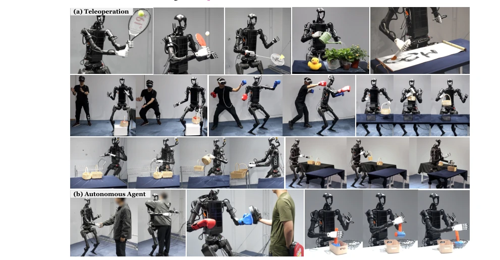
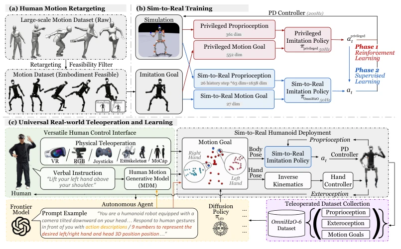
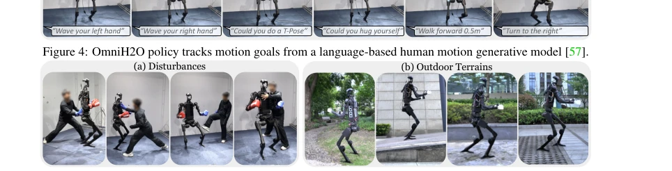

This OmniH2O work attempts to equip full-size humanoid robots with a "universal remote control" using VR and GPT-4o. The highlight is that it indeed achieves full-body coordination and supports language control, while the dataset release is considered commendable within the industry. However, a critique is that GPT-4o's latency is a significant drawback in real-time control, and it relies on root node odometry, making estimation prone to drift under outdoor complex terrains. The so-called "generalization" actually still relies on distilling large amounts of simulation data, and real-robot deployment still faces barriers. Nevertheless, the ability to run large robots like the Unitree H1 is still worth praising. It demonstrates that sparse input can also achieve full-body control, but safety mechanisms still appear insufficient under extreme disturbances, after all robots are not humans and must get up by themselves if they fall.
Full-body control of humanoid robots has always been a persistent challenge. Existing works either focus only on lower limb motion [7, 8], or decouple the upper and lower body [4], making it difficult to balance stable walking and dexterous manipulation. Although the previous H2O [3] achieved full-body teleoperation, it still required MoCap to obtain global velocity during testing, which is costly and inconvenient for field deployment. We need a control strategy that does not rely on expensive motion capture equipment, supports sparse input (such as VR), and can be directly transferred to real robots, to collect large-scale demonstration data. Furthermore, existing datasets are mostly based on fixed-base manipulators [40], lacking humanoid full-body locomotion data, which limits skill learning.

Figure 1: (a) OmniH2O enables teleoperating a full-size humanoid robot (Unitree H1) to complete tasks that require both high-precision manipulation and locomotion. (b) OmniH2O also enables full autonomy through visual input, controlled by GPT-4o or a policy learned from teleoperated demonstrations. Videos: see our website: https://omni.human2humanoid.com
The core is a Teacher-Student distillation framework. The Teacher uses privileged information (global velocity, all joints) to train the RL policy, while the Student uses only real measurable information (25-step history, 3-point pose). The innovations lie in: 1. Data augmentation, adding standing/squatting sequences to prevent the robot from moving randomly; 2. Reward design, using maximum foot height rewards to encourage stillness rather than stomping; 3. State space, using historical input to implicitly learn velocity, removing dependency on VIO. The Teacher policy is distilled to the Student via DAgger, achieving Sim-to-Real. Hand control is directly mapped through inverse kinematics, supporting VR controllers. The entire process is compatible with VR, RGB, and language instructions, achieving a closed loop from teleoperation to autonomous learning. Furthermore, the strategy design considers input history, enabling robustness maintenance even when global velocity information is lacking, which is crucial for field deployment.

Figure 3: (a) OmniH2O retargets large-scale human motions and filters out infeasible motions for humanoids. (b) Our sim-to-real policy is distilled through supervised learning from an RL-trained teacher policy using privileged information. (c) The universal design of OmniH2O supports versatile human control interfaces including VR headset, RGB camera, language, etc. Our system also supports to be controlled by autonomous agents like GPT-4o or imitation learning policy trained using our dataset collected via teleoperation.
Tested on AMASS retargeting data and 20 real robot sequences. The success rate under simulation is 94%, and the real-robot MPJPE is significantly better than H2O [3]. Robustness tests show the ability to withstand pushing and outdoor terrains. The OmniH2O-6 dataset was released, containing 6 tasks. LfD experiments demonstrate that Diffusion Policy outperforms BC, and predicting sequence actions is better than single-step. GPT-4o integration demonstrates the potential for semantic control. Ablation studies indicate that 25-step history is optimal, and explicit velocity input is not required. Overall, the system's effectiveness in full-body control, teleoperation, and autonomous learning is validated, although root node odometry remains a potential bottleneck, it is considered excellent under existing conditions.

Figure 5: OmniH2O shows superior robustness against human strikes and different outdoor terrains. History Steps and Architecture. Real-world evaluation in Table 2(b) also shows that our choice of 25 steps of history achieves the best performance. The tracking performance of LSTM shows that MLP-based policy performs better in the real-world.